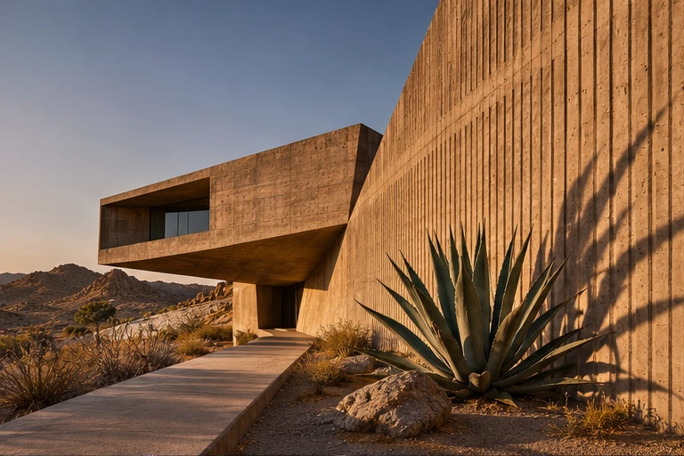

Arquitectura
Proyectos, materiales y espacios.
Diseño web · Los Cabos, MX
Tu web puede ser un escaparate, una galería o el punto de partida de una venta. Explora distintas ideas para darle forma a la tuya.
Explorar portafolio
Arquitectura ↘Demos interactivas
Abre una demo y recorre sus imágenes, contenido y estilo. Cada concepto se puede adaptar a tu marca.
Proyectos, materiales y espacios.
Servicios, propuesta comercial y contacto.
Una presentación para una plataforma de monitoreo.
Una galería para contar historias con imágenes.
Estancias, experiencias y espacios.
Ambiente, cocina y momentos en la mesa.
Una vitrina para propiedades y residencias.
Diseño a medida
Cuéntame qué hace tu negocio y qué te gustaría que tus clientes encuentren en tu sitio.